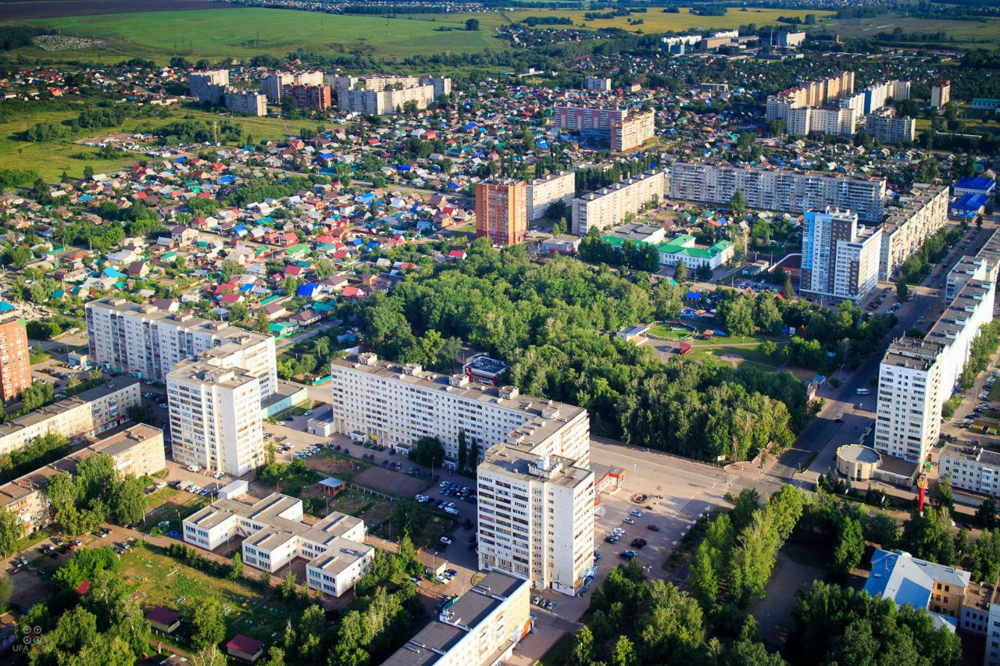
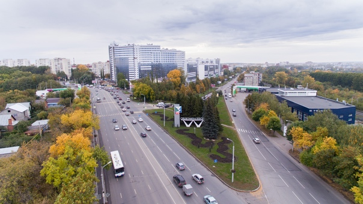
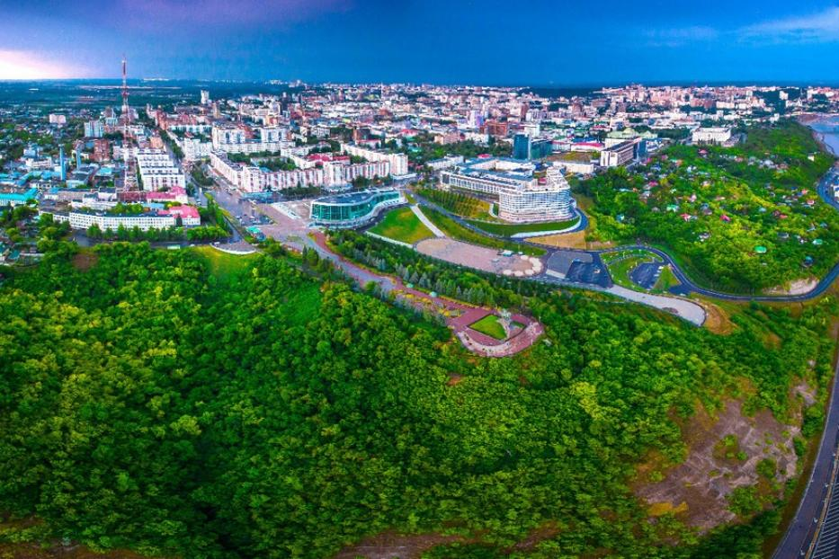
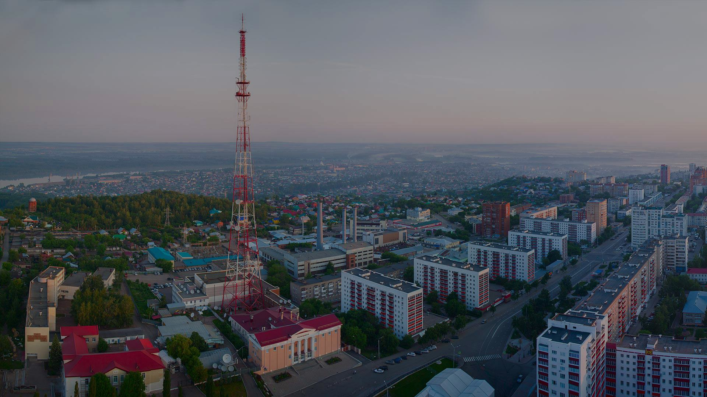
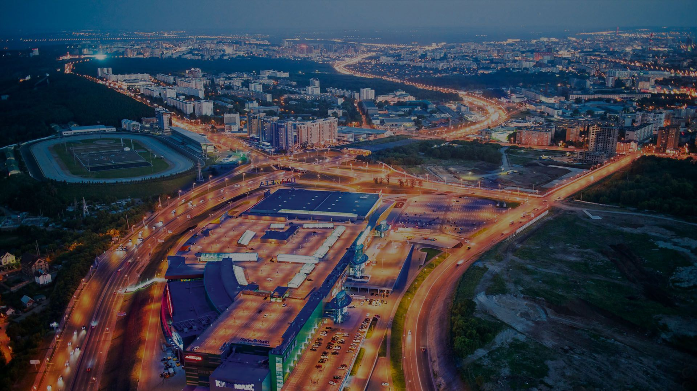
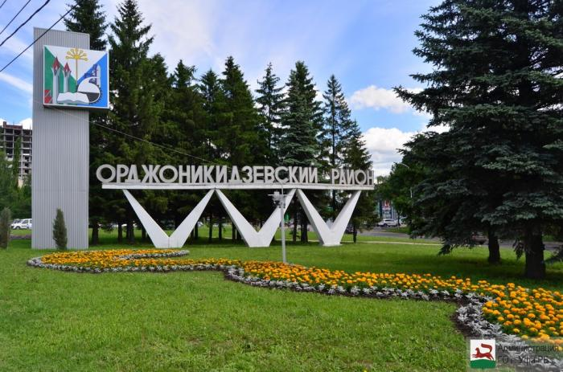
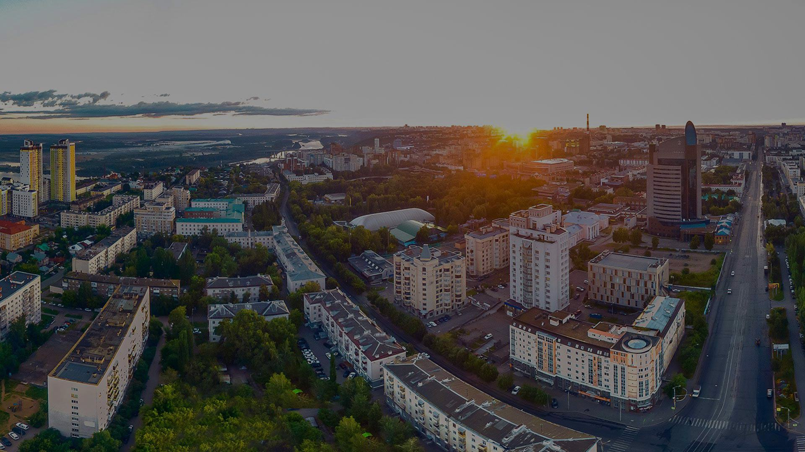

|  |
Демский районДемский район городского округа город Уфа Республики Башкортостан находится в южной части города и занимает площадь 56,37 квадратных километров. Здесь проживает 74 701 человек самых разных национальностей. Официальная дата рождения района – 6 марта 1944 года. |
|  |
Калининский районКалининский район расположен в северо-восточной части города Уфы, его площадь составляет 201,43 кв.км. Официальной датой основания района считается 25 февраля 1952 года. |
|  |
Кировский районКировский район Уфы образован 13 ноября 1935 года. Его территория - 131 кв. км, численность населения - 164 тыс. человек. |
|  |
Ленинский районПлощадь Ленинского района Уфы составляет 70,9 кв. километра, на которой проживают 86 240 человек 73 национальностей. Район состоит из трех микрорайонов – центральной части, Затона, Нижегородки. |
|  |
Октябрьский районОктябрьский район г.Уфы образован 23 марта 1977 года. Площадь территории района составляет 9,1 тыс. га. Население –более 250 тыс. человек. |
|  |
Орджоникидзевский районОрджоникидзевский район городского округа город Уфа Республики Башкортостан занимает площадь 144,4 квадратных километров, на которой, по данным на 1 января 2018 года, проживает 169 798 человек. |
|  |
Советский районИз 7 районов города Уфы Советский район – самый густонаселенный. На 1 кв. км территории приходится более 11 тысяч человек. В районе проживают более 178 тысяч человек, представляющих около 100 национальностей. |